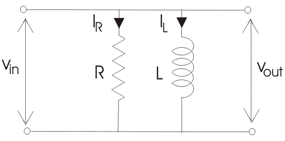

In RL parallel circuit resistor andinductor are connected in parallel with each other and this combination is supplied by a voltage source, Vin. The output voltage of circuit is Vout. Since the resistor and inductor are connected in parallel, the input voltage is equal to output voltage but the currents flowing in resistor and inductor are different. The parallel RL circuit is not used as filter for voltages because in this circuit, the output voltage is equal to input voltage and for this reason it is not commonly used as compared to series RL circuit.

Let us say: IT = the total electric current flowing from voltage source in amperes.
IR = the electric current flowing in the resistor branch in amperes.
IL = the electric current flowing in the inductor branch in amperes.
θ = angle between IR and IT.
So the total electric current IT,
Vector Diagram of RL Parallel Circuit
In complex form the currents are written as,
Impedance of Parallel RL Circuit
RL Parallel Circuit
Let, Z = total impedance of the circuit in ohms.
R= resistance of circuit in ohms.
L = inductor of circuit in Henry.
XL = inductive reactance in ohms.
Since resistance and inductor are connected in parallel, the total impedance of the circuit is given by,
In order to remove "j" from the denominator multiply and divide numerator and denominator by ( R - j XL ),
Analysis of a Parallel RL Circuit
Step 1. Since the value of frequency is already known, we can easily find the value of inductive reactance XL,
Step 2. We know that in parallel circuit, the voltage across inductor and resistor remains the same so,
Step 3. Use Ohm’s law to find the electric current flowing through inductor and resistor,
Step 4. Now calculate the total current,
Step 5. Determine the phase angles for resistor and inductor and for parallel circuit, its always
Step 6. Since we have already calculated the total electric current flowing in the circuit and voltage V is also known to us, by using Ohm’s law ; we can easily calculate the total impedance:
Step 7. Now calculate the total phase angle for the circuit which is given by,
The total phase angle of a parallel RL circuit always lies between 0° to -90°. It is 0° for pure resistive circuit and -90° for pure inductive circuit.
 by
by {kind=link}